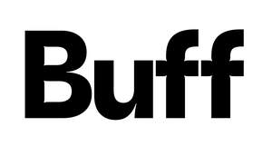

Trade Mark Journal No.2025/012 21 March 2025
UK00004088508 16 August 2024 (3,5,8,10,18,25,28)

- Class 3
- Non-medicated cosmetics and toiletry preparations; body cleaning and beauty care preparations; preparations for the care of the skin, face, scalp and body; soap; toilet soap; facial soap; hand soap; body soap; bath soap; shower soap; beauty soap; cosmetic soap; perfumed soap; bars of soap; liquid soap; soap solutions; soap products; gels; hand wash; face wash; body wash; shower preparations; shower gel; oils, creams, gels and lotions for the skin; skincare products; skincare cosmetics; facial packs; body care products; body cream; body lotion; body butter; body milk; body fudge; body shampoo; hand care products; hand cream; hand lotion; hand and nail cream; foot care products; foot cream; foot lotion; preparations for the care of the scalp and hair; shampoos; hair shampoo; shaving preparations; pre-shave and aftershave preparations; cosmetics; make-up; make-up removing preparations; cleansers; cleansing lotions; cleansing gels; cosmetic pads, tissues and wipes; pre-moistened or impregnated cleansing pads, tissues and wipes; washing preparations; washing liquids; washing creams; washing lotions; washroom products; washroom hand soap; washroom hand wash; washroom liquid soap; hand cleaning preparations; hand wash for washroom soap; none of the aforesaid being exfoliator or dermabrasion products; Refill packs for soap dispensers; clarifying soap; soap petals; bath preparations; bath elixir; bath salts; bath fizzers; bath powder; bath jelly; bath essence; bathing milk; bath gel; moisturisers; skin moisturisers; moisturising lotions; moisturising gels; skin fresheners; skin toners; beauty lotions; beauty creams; beauty gels; beauty milks; beauty masks; face masks; nail cream; fragrancing preparations; perfumery; perfumes; fragrances; scents; toilet water; aftershave; cologne; essential oils; aromatic extracts; aromatherapy products; massage preparations; deodorants and antiperspirants; conditioners; hair lotions; hair colourants; hair styling products; preparations for the care of the mouth and teeth; dentifrices; shaving lotions; shaving gels; shaving soap; hair removal preparations; suntanning and sun protection preparations; self-tanning preparations; lip care preparations; eye cream; talcum powder; cotton wool; cotton sticks; cotton buds; cotton balls; room scenting sprays; room perfumes; room fragrances; room fragrancing products and preparations; fragrance emitting wicks for room fragrance; room diffusers; reed diffusers for releasing fragrances into rooms; fragranced air freshening preparations; pot pourri; incense sticks; incense sachets; incense cones; fragrancing products for drawers, shelves and wardrobes; fragrance sachets; essential oils for use in air fresheners; washroom moisturiser; dispensers; substances for laundry use; bleaching preparations.
- Class 5
- Nutritional supplement energy bars; Meal replacement powders; Dietary and nutritional supplements; Nutraceuticals for use as a dietary supplement; Probiotic supplements; Dietary supplements; Anti-oxidant supplements; Nutritional supplements; Herbal supplements; Dietary supplements in powder form; Protein supplements; Nutritional supplement food bars; Gummy vitamins; Vitamin and mineral supplements; Vitamin drinks; Protein powder dietary supplements; Vitamin supplements for animals; Protein supplements for animals; Dietary supplements for animals; Powdered nutritional supplement drink mix; Powdered fruit-flavored dietary supplement drink mix; Powdered nutritional supplement energy drink mix.
- Class 8
- Hand tools and implements [hand-operated]; hand-operated hygienic and beauty implements for humans and animals; none of the aforesaid being exfoliators or dermabrasion products; razors; hair clippers; depilation appliances, electric and non-electric; electric hair straighteners; electric hair curling irons; electric ear hair trimmers; electric irons for styling hair.
- Class 10
- Medical and healthcare apparatus and instruments; none of the aforesaid being exfoliator or dermabrasion apparatus or instruments; Massage apparatus; Testing apparatus for medical purposes; Microdermabrasion apparatus; Electric massage guns; Facial aesthetic treatment apparatus using ultrasonic waves; LED facial aesthetic treatment apparatus.
- Class 18
- Bags for sports clothing; Pet clothing; Clothing for domestic pets; Textile shopping bags; Clothing for pets; Bags for clothes; Bags; Tote bags; Luggage bags; Duffle bags; Carry-on bags; Toiletry bags; Drawstring bags; Carry-all bags; Belt bags and hip bags; Carrying bags; Grocery tote bags; Cross-body bags; Luggage, bags, wallets and other carriers; Cloth bags; Bucket bags; Sling bags; Canvas bags; Duffel bags for travel; Belt bags; Clutch bags; Wheeled bags; Travel bags; Bags for travel; Messenger bags; Souvenir bags; Leather bags and wallets; Make-up bags; Shoulder bags; Waterproof bags; Reusable shopping bags; Camping bags; Bags for campers; Bags for carrying pets; Gym bags; Knitted bags; Bags [envelopes, pouches] of leather, for packaging; Bags [envelopes, pouches] for packaging of leather; Bags [envelopes, pouches] of leather for packaging; Cabin bags; Hand bags; Attaché bags; Traveling bags; Flight bags; Beach bags; Bags for climbers; Mesh shopping bags; Mesh bags for shopping; Canvas shopping bags; Leather shopping bags; Hiking bags; Knitting bags; Bum bags; Roller bags; Wash bags for carrying toiletries; Baby carrying bags; Gladstone bags; Waist bags.
- Class 25
- Clothing, footwear, headgear.
- Class 28
- Toys, games and playthings; video game controllers; gymnastic and sporting articles and equipment; exercise apparatus; gloves for sports; bags adapted for sports equipment; parts, fittings and accessories for the all the aforesaid goods.
Michael Hoskins
Representative: Novagraaf UK